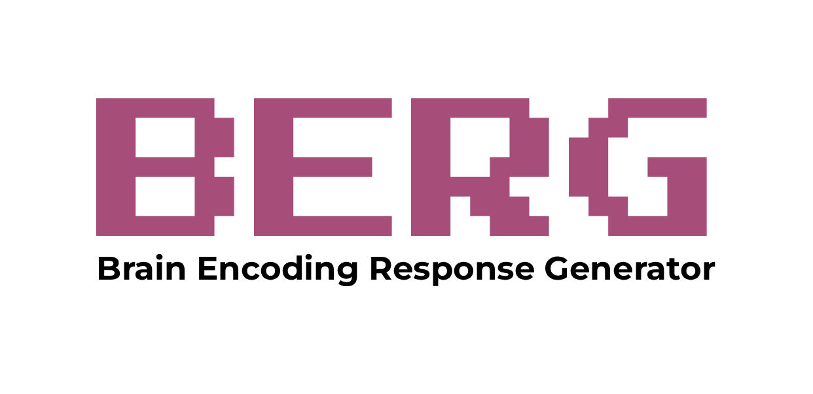

Promoting in silico neuroscience with a resource of
pretrained encoding models of the brain.
In silico neural responses to stimuli generated by encoding models increasingly resemble in vivo responses recorded from real brains, enabling the novel research paradigm of in silico neuroscience. The fast and economical generation of in silico neural responses allows researchers to test more scientific hypotheses and to explore across larger solution spaces than possible in vivo. Crucially, novel findings from large-scale in silico experimentation are then validated through targeted small-scale in vivo data collection, thereby optimizing research resources.
To empower this emerging research paradigm, we introduce the Brain Encoding Response Generator (BERG), a resource consisting of diverse pre-trained encoding models of the brain and a Python package to easily generate in silico neural responses to arbitrary stimuli with just a few lines of code. BERG enables researchers to efficiently address a wide range of research questions through in silico neuroscience by providing a growing, well documented library of encoding models trained on different neural recording modalities, species, datasets, subjects, and brain areas.
We envision that BERG will empower in silico neuroscience, ultimately accelerating scientific discovery. We warmly welcome models, ideas, and collaboration from the vision science community.
Would you like to make the encoding models from your projects easily accessible and usable with minimal, intuitive, and scalable code? Or would you like to contribute to BERG with new toolbox features or ideas? Then get in touch!
We would be grateful if you could take a few minutes to share your feedback on BERG, to contribute to improving BERG's usefulness and reliability: https://forms.gle/pybrqcaqdso2LJK88
We added to BERG encoding models trained on MOSAIC (Lahner et al., 2025), and mice foundation models (Wang et al., 2025).
We added to BERG encoding models trained on THINGS fMRI1 and THINGS MEG1 (Hebart et al., 2023), and on the THINGS ventral stream spiking dataset (TVSD; Papale et al., 2025).
We presented a poster on BERG at the Cognitive Computational Neuroscience (CCN) conference in Amsterdam.
We added to BERG the fMRI encoding model trained on NSD (Allen et al., 2025) by Huze, the winner of the Algonauts Project 2023 challenge.
The paper "In silico discovery of representational relationships across visual cortex", which used BERG, has been published in Nature Human Behavior (Gifford et al., 2025).
We added to BERG EEG encoding models trained on THINGS EEG2 (Gifford et al., 2022).
For inquiries, contact us at brain.berg.info@gmail.com